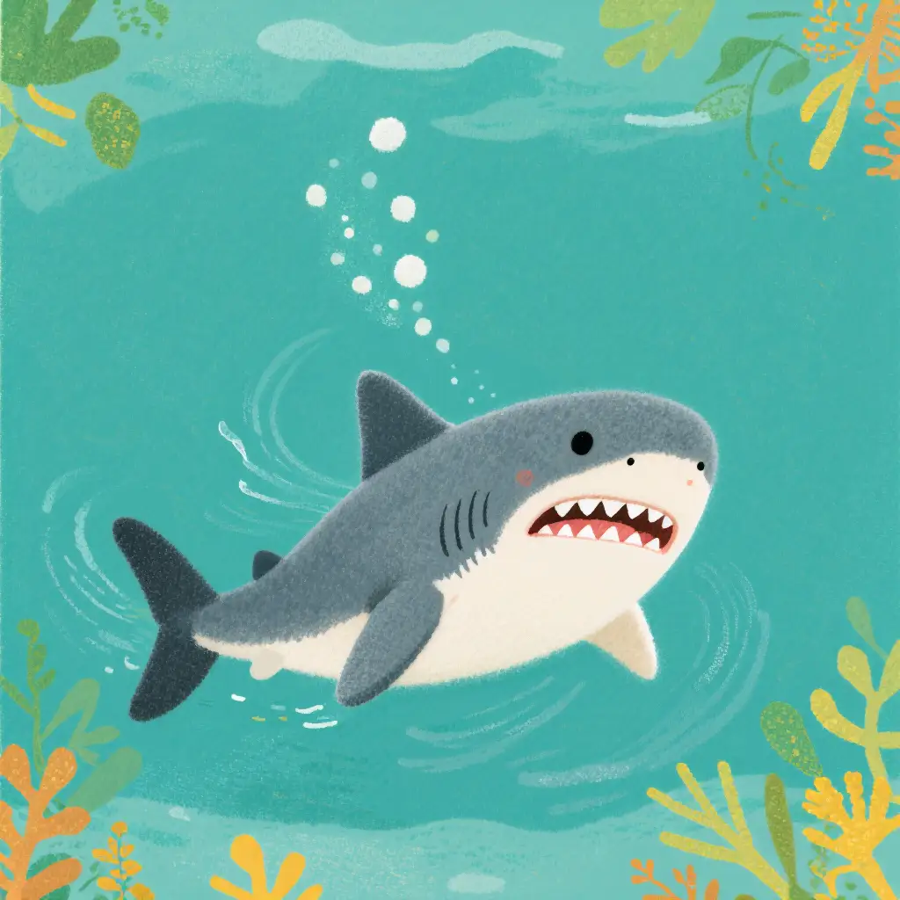
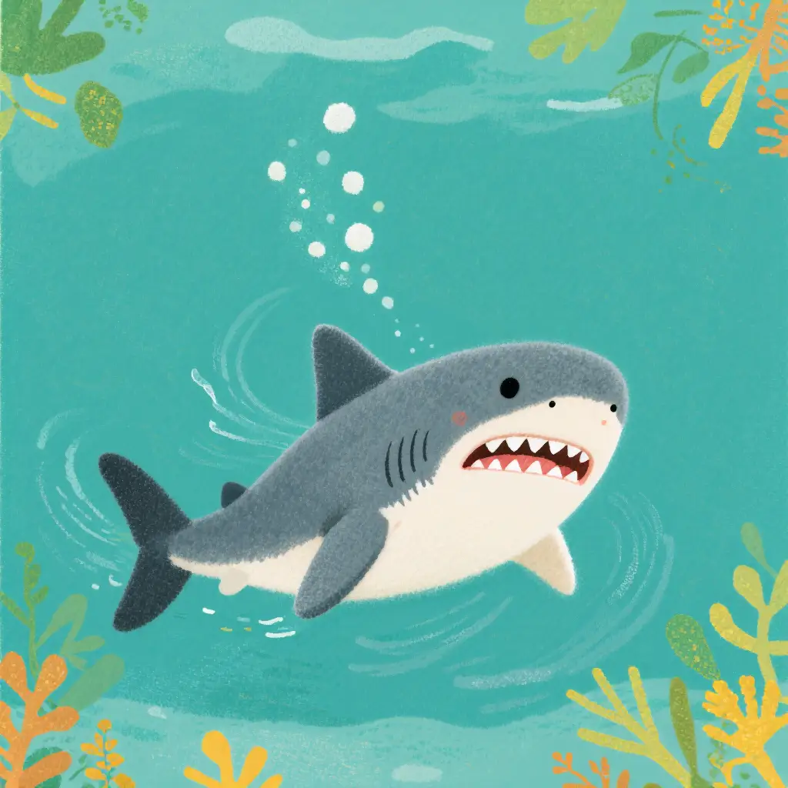

Existing literature typically treats style-driven and subject-driven generation as two disjoint tasks: the former prioritizes stylistic similarity, whereas the latter insists on subject consistency, resulting in an apparent antagonism. We argue that both objectives can be unified under a single framework because they ultimately concern the disentanglement and re-composition of content and style, a long-standing theme in style-driven research. To this end, we present USO, a Unified Style-Subject Optimized customization model. First, we construct a large-scale triplet dataset consisting of content images, style images, and their corresponding identity1d content images. Second, we introduce a disentangled learning scheme that simultaneously aligns style features and disentangles content from style through two complementary objectives, style-alignment training and content-style disentanglement training. Third, we incorporate a style reward-learning paradigm denoted as SRL to further enhance the model's performance. Finally, we release USO-Bench, the first benchmark that jointly evaluates style similarity and subject fidelity across multiple metrics. Extensive experiments demonstrate that USO achieves state-of-the-art performance among open-source models along both dimensions of subject consistency and style similarity.
USO unifies subject-driven and style-driven generation in two stages: Stage 1 aligns SigLIP embeddings via style-alignment training to yield a style-capable model; Stage 2 disentangles the conditional encoders and trains on triplets to enable the joint conditional generation. Finally, a style-reward learning paradigm supervises both stages to yield a stronger unified model.
We open-source this project for academic research. The vast majority of images
used in this project are either generated or from open-source datasets. If you have any concerns,
please contact us, and we will promptly remove any inappropriate content.
Our project is released under the Apache 2.0 License. If you apply to other base models,
please ensure that you comply with the original licensing terms.
This research aims to advance the field of generative AI. Users are free to
create images using this tool, provided they comply with local laws and exercise
responsible usage. The developers are not liable for any misuse of the tool by users.
Source code of the project page can be found in .